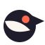

Brand · 2026
The friendly control panel.
Merlark should feel like a well-made desk gadget: calm, colourful, pressable, and obviously useful in five seconds. The joy comes from colour, round shapes and small satisfying clicks — never from effects.
Logo
A round lark built from four shapes: a body, a beak, a wedge wing cut out of it, and a coral eye. The eye doubles as the “watching” lamp. Below 24 px use the small cut: a bigger eye and a chunkier beak.


Wordmark and lockups
“merlark”, always lowercase, in Fredoka Bold, drawn as outlines. The wordmark sits beside the symbol at about half its height.
- The eye is coral in colour versions. In one-colour use it stays a hole in the body.
- Don’t outline, rotate, stretch, add gradients to or re-space the mark.
- Leave clear space on every side equal to the beak’s length.
Palette
Warm paper, white panels, ink outlines and flat pastels. Coral is the one action colour: primary buttons and the watching lamp. Nothing else is coral.
- Paper
#FBF7F0Page ground - Panel
#FFFFFFPanels, cards - Ink
#1F1C2CText, outlines - Muted ink
#6B6779Secondary text - Coral
#FF6A4DActions, the lamp - Sky
#C6E4FFObserved by Merlark - Lilac
#DCD2FFHistorical estimate
Finding colours — fixed forever
- Working
Mint #BFEBD6 - Slipping
Peach #FFCDB8 - Emerging
Butter #FFE8A3 - Neutral
Fog #ECE8E1 - Not enough data yet
Fog + hatching
Type
Map-first openings · 1.4×
Fredoka 600–700 · headlines, buttons, chips, big numbers · SIL Open Font License, self-hostedEight long videos open with an animated route map in the first 10 seconds. In week one they averaged 29,450 views; your other long videos usually get 21,200.
Figtree 400–600 · reading text · SIL Open Font License, self-hosted29,450 · 21,200 · 0:00–0:10
Numbers use tabular figures. Key readouts are big, like a gadget display.Pieces
Map-first openings
1.4×your usual
White on paper, 28px corners
Interactive pieces get a 2px ink outline and a hard 3px drop, so they look pressable.
Voice
Talk to one creator. Short sentences, one idea each. Concrete beats abstract. Honest, but friendly about it.
- “Eight videos, one shared trick.”
- “That’s 1.4× your usual. It’s a link, not proof of cause.”
- “Not enough data yet.”
- “Try a map in the first 10 seconds of your next travel episode.”
- “A longitudinal observation across the provenance boundary.”
- “Your channel is likely to be demonetized.”
- “Insufficient evidence for interpretation.”
- “We check your channel every day.”
Swaps: observation → “What we saw” · interpretation → “What it might mean” · baseline → “your usual” · intervention → “experiment” · outcome → “how it went”. Wherever history is shown, the backfill label stays word for word: “Historical estimate based on currently accessible content. Deleted, private, or unavailable videos may not be represented.”
Motion
- Micro only. Buttons press down 2px. Switches snap. Panels pop in with a small spring, 300 ms or less.
- Numbers count up once when they first scroll into view.
- The lamp blinks slowly while Merlark is watching.
- Never: scroll-jacking, canvas effects, glows, particles or gradients.
- Respect stillness. Reduced-motion settings and the site’s motion switch turn animation off.